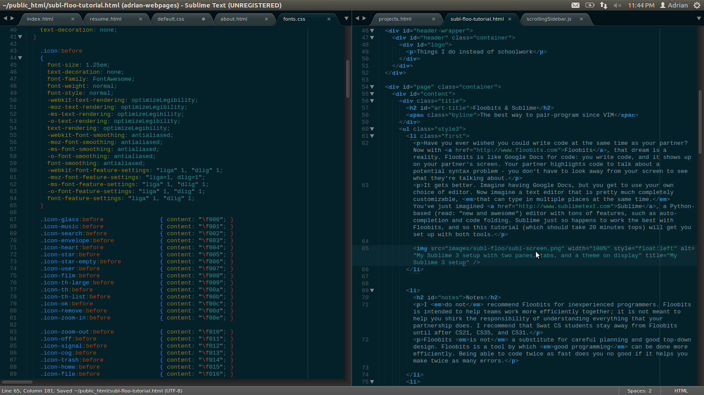
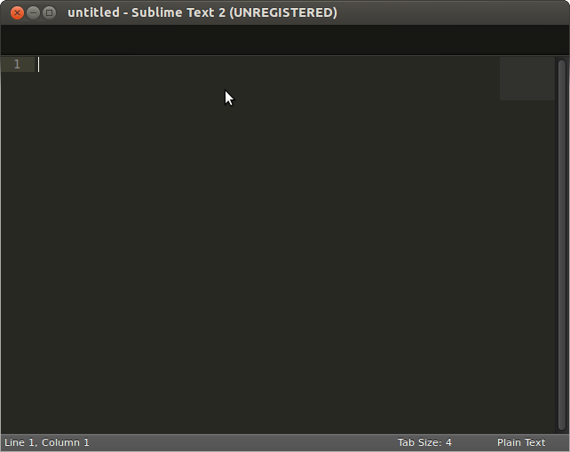
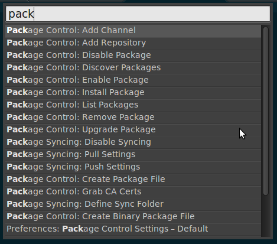
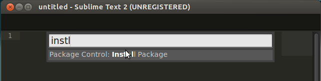
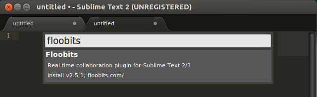
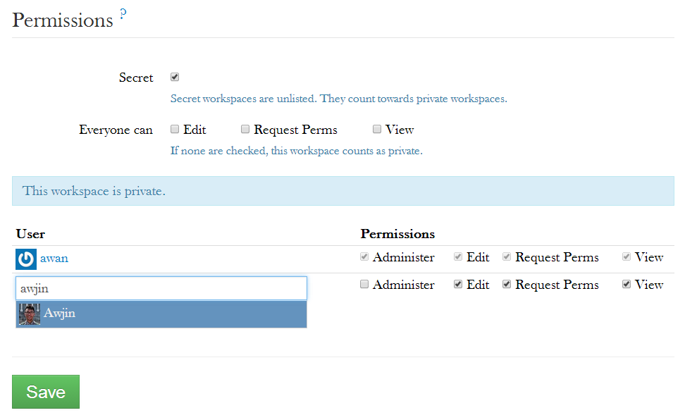
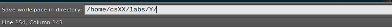
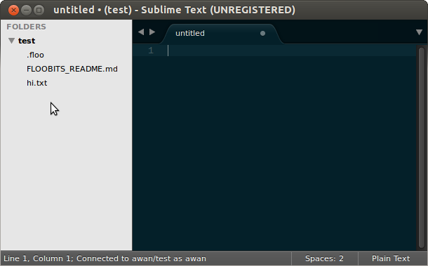

Floobits & Sublime
-
Have you ever wished you could write code at the same time as your partner? Now with Floobits, that dream is a reality. Floobits is like Google Docs for code: you write code, and it shows up on your partner's screen. Your partner highlights code to talk about a potential syntax problem - you don't have to look away from your screen to see what they're talking about.
It gets better. Imagine having Google Docs, but you get to use your own choice of editor. Now imagine a text editor that is pretty much completely customizable, that can type in multiple places at the same time. You've just imagined Sublime, a Python-based (read: "new and awesome") editor with tons of features, such as auto-completion and code folding. Sublime just so happens to work the best with Floobits, and so this tutorial (which should take 30 minutes tops) will get you set up with both tools.

-
Notes
I do not recommend Floobits for inexperienced programmers. Floobits is intended to help teams work more efficiently together; it is not meant to help you shirk the responsibility of understanding everything that your partnership does. I recommend that Swat CS students stay away from Floobits until after CS21, CS35, and CS31 - classic one-person-at-a-time pair-programming is the most sure-fire way to learn in those classes.
Floobits is not a substitute for careful planning and good top-down design. Floobits is a tool by which good programming can be done more efficiently. Being able to code twice as fast does you no good if it helps you make twice as many errors.
Floobits doesn't have version control. Luckily, you can use Floobits with Git pretty easily - point Floobits' local copy to a Git repository (see Using the workspace in the Floobits section) and you're good to go.
-
Be Sublime, my friend
Sublime is capable of so many things, and I guarantee you'll keep discovering things that you can do with it. For now, let's get set up with your own personal copy of Sublime.
Sublime is not free: there is an unlimited trial period, but an individual license costs about $70. In effect this means that you can keep using Sublime until you fall deeply enough in love with it to buy a license.
Installation
First, download Sublime Text 3 as a tarball using the Ubuntu 64 bit version (I use Sublime 3 in this tutorial. If it matters to you, go ahead and do all this for Sublime 2. No guarantees about how well this will work though). Save this somewhere that you can find - your home directory or your Desktop is fine.
If you don't already have a bin directory in your home path, make one now:
$ mkdir ~/bin
Then move the tarball you downloaded into this folder and un-tar it:
$ cd
#assuming you downloaded to home
$ mv sublime_text_3_(...).tar.bz2 ./bin
$ cd bin
$ tar xvjf sublime_text_3_(...).tar.bz2And now you have a fully functional copy of Sublime 3 on your computer! It's in the new sublime_text_3 directory. Wasn't that easy?
Configuration
To be able to run Sublime from the command line, two things must be done:
1) Check that the bin folder in your home directory is in your PATH. Run
$ echo $PATH
and if you see /home/(your usrname)/bin or $HOME/bin you're all set. Otherwise, open ~/.bashrc in your favorite (non-Sublime) editor and add this line in there:
export PATH="$HOME/bin:$PATH"
This adds the ~/bin directory to the system PATH variable. You'll need to run $ source ~/.bashrc on the command line to reload the .bashrc file.
2) Make a symbolic link to the executable file in the bin folder: in your ~/bin folder run
$ ln -s sublime_text_3/sublime_text .
Now sublime_text is a command-line-executable command.
 -
Package Control
Package Control is what makes Sublime such a great editor. Package Control lets you add functionality to Sublime without ever leaving the editor: it downloads, unpacks, and installs packages for you. We'll be using it here to install Floobits, but the same process applies for all packages.
(Note that some packages are only for Sublime Text 2, some are only for 3, and some work for both.)
To install Package Control, copy the text in the box here (make sure you're copying from the Sublime Text 3 tab!), open the console in Sublime by pressing ctrl+` (that's the backtick, the button above Tab), paste the text in the box, and hit Enter. Restart Sublime, and it should be installed. Check this by hitting ctrl+shift+p to open up the command palette, and typing Package Control. As you type, a long list of commands starting with Package Control should show up. If not, make sure you followed the instructions on the installation page properly.

On most of the lab computers, the following error screen pops up when you try to run Sublime after installing Package Control:
>> error: Package Control >> >> Your system's locale is set to a value that can not handle non-ASCII >> characters. Package Control can not properly work unless this is fixed. >> >> On Linux, please reference your distribution's docs for information on properly >> setting the LANG environmental variable. As a temporary work-around, you can >> launch Sublime Text from the terminal with: >> >> LANG=en_US.UTF-8 sublime_textTo solve this, we simply take the popup window's advice and run Sublime with the extra options given. The easiest way to do this is to define an alias in your .bashrc or .bash_aliases file: open ~/.bashrc in your favorite (non-Sublime) editor and add the following line to it somewhere near the other aliases in there:
alias subl="LANG=en_US.UTF-8 sublime_text"
Then run $ source ~/.bashrc to reload the file. Now you should be able to hit $ subl to start Sublime.
-
Floobits
Floobits is the package that allows you to upload files to the cloud and edit them simultaneously from different editors. Let's get you set up.
Installation
With Package Control installed, installing Floobits is easier than pie. Open the command palette with ctrl+shift+p then start typing install - select Package Control: Install Packages. Once Package Control starts up, type Floobits, and install the Floobits package. You're done!


Setting up a workspace
Right after you install Floobits, you'll be redirected to make an account with Floobits. Go ahead and follow the instructions on the Floobits page, and your copy of Sublime will be linked to your Floobits account.
Once you've made an account, there's one more thing to do. By default, free accounts can only make public workspaces. This means that your code is visible to anyone on the Internet, even if they don't have a Floobits account. That's no good! Luckily, Floobits offers 3 private workspaces for free for users with a .edu account. Follow this link to link your Floobits account with your @swat account, and rack up 3 free private workspaces!
Now to set up your first workspace. Only one person should do this part! On the Floobits webpage, click Create a Workspace up top, and fill in the Name field, e.g. csXX_labY. Check "Secret" and uncheck all the "Everyone can" boxes (see the image below). Create the workspace, then in the search for user box, find your partner by username and select them. Hit save. Now your partner can collaborate on this code.

Using the workspace
Now your workspace exists on the Floobits servers. What now?
This is where Sublime comes back in. We want to access the workspace from Sublime so that we can edit the code there. One partner should do this part.
In Sublime, press ctrl+shift+j (or find Floobits - Join Workspace in the command palette) to open up the Workspace URL bar at the bottom. Fill in the URL with the URL of your newly-created workspace, e.g. https://floobits.com/awan/csXX_labY, and hit enter.

The bar will change to prompt you for a local directory. THIS PART IS IMPORTANT. If you have already started on a lab, insert the path of that directory here. This will initialize the workspace with the existing files. Otherwise, just put it somewhere that you'll be able to find it again.

Now in the side-bar you should see your existing files pop up. If not, navigate to File->Open Folder and open your lab folder up. Finally, to tell Floobits to sync this to the workspace, right click on the top level folder and choose Floobits->Add to Workspace. You should see it upload at the bottom of the screen (where it says Connected to yourname/workspacename as yourname). Once this is complete, your files have been added to the Floobits server!

Once this is all done, your partner should Join the workspace as well, and sync it to an empty local directory (syncing it to an existing directory could be fine but it's easier to replace the existing directory with the new Floobits-synced one) following the same steps above. Now test it out - if you are both connected to the workspace, you should be able to see each other's edits on your own screen. Happy coding!
Subsequent Projects
If you enjoyed using Floobits and Sublime for pair-programming, you'll want to keep hosting your lab projects on Floobits workspaces. However, unless you pay for more, students only get 3 private workspaces total. I recommend deleting the workspace from the Floobits website after you've handed your lab files in. This frees up space for a new project, and doesn't change any local files offline - it just stops you from editing the same files at the same time online.
-
More on Sublime
Sublime is getting buckets of love for some really great features:
Packages
Package Control that we encountered earlier unlocks a wealth of user-generated packages that have amazing functionality. Pretty much everything is open-source so you can contribute too! And all packages can be installed from inside Sublime using the command palette, so there's no harm in experimenting!
Some really good packages to check out: Vintageous gives great VIM emulation (so you can use your hard-learned VIM movements to the fullest). DocBlockr implements block commenting functionality. Some sweet low-contrast theme like Solarized (install Solarized Toggle to switch between light and dark Solarized by pressing f12!) or Zenburn makes programming easier on the eyes.
And if you ever find yourself wishing that some functionality was implemented, do a quick Google search for it. Chances are, there's a package for it.
Multi-cursors
Multi-cursoring is the new best thing. Put cursors in multiple locations by holding ctrl and clicking, or select the next instance of the current highlighted text with ctrl+d. Select all instances of the current text with alt+f3. Any edits you make will happen at all your cursors simultaneously!
For more information, check out the Sublime documentation here.
User Preferences
Being built on Python, user preferences are as easy to define as rewriting entries of a Python dictionary. Open up the command palette (ctrl+shift+p is your new best friend), start typing user look for Preferences: Settings - User. If you select that, you'll open up the preferences file, in which you can define lots of cool things (check out "caret_style": "phase"!) that make coding easier on you. Here are my preferences:
{ "always_show_minimap_viewport": true, "bold_folder_labels": true, "caret_style": "phase", "color_scheme": "Packages/Color Scheme - Default/Solarized (Dark).tmTheme", "fade_fold_buttons": false, "font_face": "Courier New", "font_size": 10, "highlight_line": true, "ignored_packages": [ "Vintage" ], "rulers": [ 80 ], "tab_size": 2, "translate_tabs_to_spaces": true, "vintage_start_in_command_mode": true, "vintageous_use_ctrl_keys": true }See what works for you!
-
Acknowledgments
A huge thank-you to Jeff Knerr for his feedback and help with the .edu accounts, without whom I would still be taking turns with my partner to type. A shout-out to the Matchbot team (Sam, Stella, Rita, and Luis) for introducing me to this in the first place.
{kind=link}
{kind=link}
{kind=link}
{kind=link}
{kind=link}